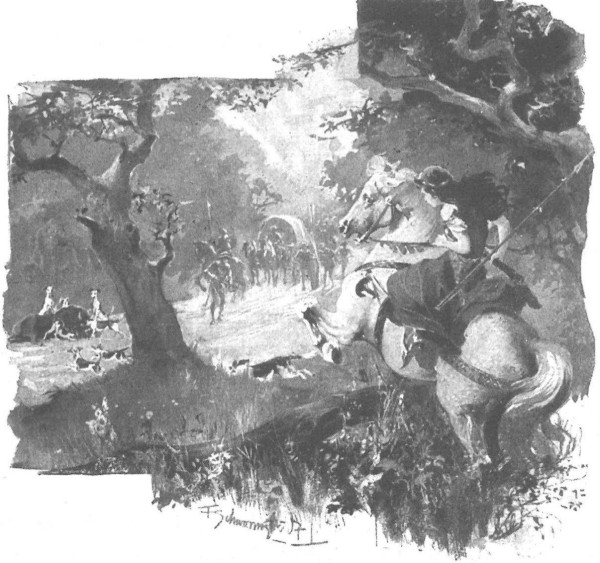

Cha xứ nghe ông Maćko xưng tội, ân cần giữ họ lại nghỉ đêm, mãi sáng hôm sau mới lên đường đi tiếp. Qua thành Olkus, họ rẽ về hướng Śląsk, đi dọc theo biên giới công quốc ấy cho đến Wielkopolska. Con đường phần nhiều chạy giữa miền rừng đại ngàn rậm rạp, nơi hoàng hôn thường vang động tiếng rống của lũ bò tót và bò rừng, nghe như những tiếng sấm ngầm dưới đất; ban đêm, giữa những lùm phỉ tử rậm rạp, lóe lên những cặp mắt chó sói. Nhưng mối họa lớn hơn dã thú, thường xuyên de dọa khách thương và người bộ hành trên con đường này là bọn hiệp sĩ Đức, hoặc bọn người Đức hóa từ vùng Śląsk kéo sang, xuất phát từ những pháo đài và thành trì nhỏ mà chúng dựng lên ngay sát đường biên giới. Dẫu trong cuộc chiến với gã Opolczyk Naderspan [137] - kẻ được các cư dân vùng Śląsk giúp sức chống vua Władysław - những cánh tay Ba Lan đã phá tan phần lớn các thành trì ấy, nhưng người đi đường vẫn phải đề phòng cẩn thận, không rời vũ khí, nhất là sau khi mặt trời lặn.
Song lần này, đoàn họ đi yên ổn, yên ổn đến nỗi Zbyszko đâm ngán. Mãi đến một đêm nọ, khi còn cách Bogdaniec chừng một ngày đường nữa, họ mới chợt nghe có tiếng vó ngựa và tiếng ngựa hí sau lưng.
- Có bọn nào đang theo vết chúng ta. - Zbyszko thốt lên.
Không ngủ được, ông Maćko đưa mắt nhìn sao trời rồi nói bằng giọng dạn dày kinh nghiệm:
- Sắp sáng rồi. Bọn cướp không bao giờ tấn công lúc sắp hết đêm, vì gần sáng là lúc chúng phải trở về nhà.
Nhưng Zbyszko vẫn cho đoàn xe dừng lại, đàn gia nhân thành đội hình chiến đấu chắn ngang đường, mặt hướng về phía những kẻ đang đuổi theo, và đích thân chàng tiến lên phía trước để đương đầu với chúng.
Lát sau, trong bóng đêm nhập nhoạng, chàngtrông thấy khoảng mươi kỵ sĩ. Người dẫn đầu đi trước cả bọn vài bước, rõ ràng không có ý định gì ám muội, bởi ông ta đang hát rất to. Zbyszko không nghe rõ lời, nhưng vang đến tai chàng là những tiếng ‘Hốc! Hốc!” vui nhộn mà người kia dùng để đệm kết thúc mỗi khúc ca.
“Người của ta!” Chàng tự nhủ.
Nhưng một lúc sau, chàng vẫn thét lên:
- Dừng lại!
- Còn ngươi thì ngồi xuống! - Một giọng quấy tếu nói.
- Các ngươi là ai?
- Vậy ai là các ngươi?
- Sao các ngươi dám đuổi theo chúng ta?
- Ai bảo các ngươi dám chắn đường?
- Trả lời mau, cung nỏ ta đã căng đây sẵn cả rồi!
- Còn cung nỏ chúng tớ đã… chùng đây cả rồi! Bắn đi!
- Trả lời nghiêm chỉnh ngay, nếu không thì khốn đấy!
Nhưng đáp lời Zbyszko lại là một khúc ca vui nhộn:
♫ Đã nghèo lại gặp phải nghèo, ♫
♫ Chia tay, ta nhảy một lèo cho vui! ♫
♫ Hốc! Hốc! Hốc! ♫
♫ Nhảy chi, nghèo vẫn hoàn nghèo. ♫
♫ Mặc nghèo, cứ nhảy một lèo cho vui! ♫
♫ Hốc! Hốc! Hốc! ♫
Zbyszko sửng sốt khi nghe lời hát. Đúng lúc ấy, khúc ca tắt, rồi có tiếng người kia hỏi lại:
- Này, thế ông lão Maćko ra sao rồi? Còn sống chứ?
Trên xe, ông Maćko nhổm dậy, thốt lên:
- Ơn Chúa, người của ta đấy mà!
Zbyszko phóng ngựa lên trước.
- Ai hỏi thăm ông Maćko đấy?
- Láng giềng đây, gã Zych trang Zgorzelice đây. Suốt cả tuần nay tôi đi theo vết các vị, hỏi dò mọi người dọc đường.
- Ôi trời! Chú ơi! Bác Zych trang Zgorzelice đang ở đây! - Zbyszko kêu lên.
Rồi họ vui sướng chào hỏi nhau, bởi lẽ ông lão Zych chính là người láng giềng của họ, hơn nữa lại rất vui tính, được mọi người yêu mến.
- Nào, thế bác ra sao? - Ông vừa lắc lắc tay ông Maćko vừa hỏi. - Còn hốc được nữa không, hay đã hết hốc rồi!
- Hey! Hết hốc được rồi! - Ông Maćko đáp. - Tôi rất mừng được gặp bác. Lạy Chúa lòng lành, tôi ngỡ như đã về được tới Bogdaniec rồi vậy!
- Thế bác bị làm sao? Nghe đâu bác bị trúng tên bọn Đức?
- Bọn chó đẻ bắn đấy! Mảnh tên còn nằm giữa các xương sườn tôi đây…
- Phải biết sợ Chúa với chứ! Thế rồi sao? Bác đã thử uống mỡ gấu chưa?
- Đấy, chú thấy chưa! - Zbyszko thốt lên. - Ai cũng khuyên nên uống mỡ gấu nhé. Cốt sao về được Bogdaniec! Cháu sẽ mang rìu đi vào rừng phục ngay cạnh đõ ong.
- Có thể Jagienka có trữ mỡ gấu cũng nên, nếu không tôi đi hỏi cho.
- Jagienka nào? Bác gái bên nhà là Małgochna kia mà! - Ông Maćko hỏi.
- Ồ! Nói làm gì đến Małgochna nữa! Tới lễ Thánh Michał này là vừa chẵn ba thu mụ ấy vào nghỉ trong vườn nhà Chúa rồi. Một mụ đến là hay gây sự, xin Chúa soi sáng cho vong linh mụ! Đã có con bé Jagienka nhà tôi thay mụ, có điều nó còn trẻ người non dạ…
♫ Sau thung là đến núi cao, ♫
♫ Mẹ nào con nấy, làm sao bây giờ… ♫
♫ Hốc! Hốc! ♫
… Tôi đã bảo Malgochna: ngoại ngũ tuần thì chớ có trèo cây thông. Không là không! Mụ cứ trèo, cành gãy rời và thế là - bụp. Mà bác biết không, mụ ấy rơi lõm cả đất, nhưng phải ba ngày sau mới thở hắt ra…
- Xin Chúa soi sáng linh hồn bà ấy! - Ông Maćko nói. - Tôi nhớ, tôi nhớ chứ… Hễ khi nào bà ấy chống nạnh và bắt đầu mở miệng thì gia nhân chỉ còn nước chui vào đống cỏ khô mà trốn. Nhưng chuyện đồng áng làm ăn thì bà ấy giỏi giang lắm! Thế ra bà ấy bị ngã từ cây thông xuống ư?… Tội chưa!…
- Mụ rơi đánh bịch như một quả thông rụng mùa đông… Ôi, đau buồn lắm. Bác biết không? Sau đám tang, tôi đau đớn quá, uống rượu giải sầu lắm đến nỗi suốt ba ngày trời người ta không tài nào đánh thức nổi. Cứ tưởng tôi cũng nằm xuống luôn kia. Rồi sau đó tôi khóc mới ghê chứ, nước mắt đựng hàng xô không hết! Chuyện làm ăn, lo việc nhà cửa thì Jagienka cũng giỏi giang lắm. Mọi sự bây giờ dồn cả lên vai nó.
- Tôi chỉ nhớ láng máng về con bé thôi. Khi tôi ra đi, nó còn chưa cao hơn cán rìu kia mà, chui qua bụng ngựa còn chưa đụng đầu. Ha! Bao lâu rồi còn gì, chắc phải lớn lắm rồi nhỉ.
- Đến lễ Thánh Agnieszka này nó tròn mười lăm. Nhưng cũng đã một năm nay tôi không thấy mặt nó rồi còn gì.
- Vậy có chuyện gì xảy ra với bác? Bác ở đâu về vậy?
- Chiến tranh mà lị! Chẳng lẽ tôi ngồi mục ra ở nhà trong lúc đã có Jagienka làm lụng sao?
Dù đang đau yếu, nhưng nghe nói đến chiến tranh, ông Maćko liền dỏng tai lên, hỏi:
- Hay bác đi với đại quận công Witold đánh nhau ở trận Worskla?
- Phải, tôi đã ở đấy. - Ông Zych trang Zgorzelice vui vẻ đáp. - Chúa không ban phước cho đại quận công, chúng tôi bị một trận đại bại chí tử khi đánh nhau với tướng giặc Edyga. Đầu tiên, chúng hạ hết ngựa của quân ta đã. Bọn Tatar không đánh nhau đằng thằng như hiệp sĩ Ki-tô đâu. Từ tít đằng xa chúng đã phóng một trận mưa tên, không biết thóp ấy à, là chúng lại lỉnh ngay, rồi bắn tên nữa. Mà bác biết rồi đấy, các hiệp sĩ bên ta thì huênh hoang vô độ, bảo: “Ta chẳng cần chĩa thương rút kiếm làm gì, chỉ vó ngựa ta cũng đủ giày xéo nát bét loài sâu bọ ấy rồi!” Cứ huênh hoang khoác lác thế cho đến khi xơi một phát tên rồi mới tối cả mắt mũi lại mà gào lên! Thế là rồi đời, chứ gì nữa? Mười người may mới sống được một. Bác không tin à? Hơn nửa quân số, là bảy mươi tướng Litva và Nga nằm lại trên bãi chiến trường, chưa kể vô khối tì tướng với triều thần - hay như họ gọi: otrok - thì có đếm đến cả hai tuần cũng chẳng hết.
- Tôi có nghe nói. - Ông Maćko ngắt lời. - Trong các hiệp sĩ của ta cũng nhiều người ngã xuống.
- Hà, thậm chí có cả chín gã hiệp sĩ Thánh chiến nữa, chẳng là họ cũng phục vụ dưới trướng đại quận công Witold hùng mạnh mà. Người của chúng ta cũng khối, vì bác biết đấy, người của ta có bao giờ chịu nhìn lại đằng sau lưng như kẻ khác đâu. Đại quận công tin tưởng nhất ở các hiệp sĩ của ta, ra trận ngài không muốn có vệ binh nào ngoài các hiệp sĩ Ba Lan. Hi, hi! Họ nằm như ngả rạ chung quanh ngài, thế mà ngài không bị làm sao cả! Những người ngã xuống là hiệp sĩ Spytko xứ Melsztyn, chưởng kiếm Bernat, ngự tửu Mikołaj, các hiệp sĩ Prokop, Przecław, Dobrogost, Jaśko xứ Lazewice, Pilik xứ Mazury, Warsz xứ Michowo, cả ngài thống đốc Socha, hiệp sĩ Jaśko xứ Dąbrowa, Pietrko xứ Miłosławie, Szczepiecki, Oderski và Tomko Łagoda nữa. Đếm sao hết những người đã ngã xuống! Mắt tôi thấy nhiều người bị tên găm tua tủa như con nhím vậy, thật buồn cười!
Rồi ông cười thật, như thể đang kể một câu chuyện vui vẻ nhất Đột nhiên ông cất tiếng hát:
♫ Ôi, ngươi sẽ biết thế nào là bọn Tatar ♫
♫ Khi bị chúng nó lột da và xát muối! ♫
- Thế rồi sao nữa ạ? - Zbyszko hỏi.
- Thế rồi đại quận công lui binh. Nhưng chẳng bao lâu sau, ngài lấy lại được tinh thần. Càng bị đè mạnh bao nhiêu, ngài càng bật lên khỏe bấy nhiêu, cứ như cái lò xo ấy. Chúng tôi liền lao tới chỗ vượt sông Tawan để chặn địch. Có thêm một toán hiệp sĩ viện binh mới từ Ba Lan kéo tới. Rồi cũng xong hết! Hay tuyệt! Hôm sau, tướng giặc Edyga kéo cả đàn cả lũ Tatar nhà hắn đến, nhưng chẳng làm nổi trò trống gì! Hey! Thật nhộn! hễ hắn định vượt sông là lại bị chúng tôi quạng ngay vào mõm, không làm gì được. Chúng tôi giết và bắt sống cũng kha khá. Tôi vớ được năm thằng, dẫn về Zgorzelice đây. Đến sáng, các vị sẽ thấy mặt ngang mũi dọc của bọn chó đẻ đó.
- Ở Kraków người ta đồn rằng chiến tranh có thể lan ra toàn vương quốc ta.
- Có họa thằng Edyga là đồ ngu. Hắn biết quá rõ giới hiệp sĩ chúng ta là thế nào, hắn hiểu rằng những hiệp sĩ lừng danh nhất chưa tham chiến, bởi hoàng hậu không bằng lòng việc đại quận công Witold tự mình khai chiến. Ôi, hắn cáo lắm chứ, cái lão già Edyga ấy! Ngay bên bờ sông Tawan, hắn hiểu được ngay là đại quận công đã mạnh trở lại, bèn rút quân thật xa, đến tận vùng đất thứ mười!…
- Còn các bác cũng trở về?
- Về chứ! Có chuyện quái gì làm ở đấy nữa. Tại Kraków, tôi nghe tin báo, biết bác vừa mới đi cách tôi chưa lâu.
- Sao bác đoán biết đây là đoàn chúng tôi?
- Biết chứ, đến chỗ nghỉ chân nào tôi chẳng hỏi thăm các bác.
Nói đến đây, bác ta quay sang Zbyszko:
- Hey , lạy Chúa, lần cuối cùng tôi gặp thì cậu hãy còn bé tí! Bây giờ tuy trời tối nhưng tôi vẫn nhận ra rằng cậu đã là một chàng trai to như bò tót. Chắc cậu đã lên được dây nỏ rồi đấy nhỉ!… Đã từng tham chiến thì hẳn rồi.
- Từ bé cháu đã được chiến chinh nuôi dạy. Xin chú hãy nói xem cháu có còn non dại gì chăng?…
- Chú cậu chẳng cần nói gì đâu. Tôi đã gặp tướng công xứ Taczew ở Kraków, ngài đã kể hết cho tôi nghe về cậu… Cái ông hiệp sĩ xứ Mazury ấy không muốn gả con gái cho cậu, chứ tôi thì chẳng rắn lòng thế đâu, tôi thích cậu lắm… Mà trông thấy con bé Jagienka nhà tôi là cậu sẽ quên ngay cô gái ấy thôi. Tuyệt!…
- Không! Cháu sẽ không quên, dù có gặp cả mười cô như cô Janga [138] nhà bác!
- Bọn trai nhà Moczydoły có cối xay bột ấy, cứ chạy theo con bé. Trên đồng cỏ nhà họ, tôi đi ngang qua thấy tới mười con ngựa cái tuyệt mã với lũ ngựa con… Janga sẽ không thiếu gì kẻ khom lưng quỳ gối đâu, cậu chớ lo!
Zbyszko đã chực đáp lại: “Nhưng không có tôi!”, song ông Zych trang Zgorzelice đã lại cất tiếng hát:
♫ Tôi xin quỳ gối lạy van, ♫
♫ Xin ngài cho cưới cô nàng Janga! ♫
♫ Chúa sẽ trả công cho ngài! ♫
- Lúc nào bác cũng vui vẻ hát ca ấy nhỉ. - Ông Maćko nhận xét.
- Thế bác có biết những linh hồn được hưởng ân phước làm gì trên thượng giới không đã?
- Ca hát.
- Đấy bác thấy chưa! Còn những linh hồn bị rủa nguyền thì luôn luôn than khóc. Tôi thích đến với những linh hồn ca hát hơn tới với đám khóc than. Thánh Piotr sẽ phán rằng: “Hãy để cho hắn lên thiên đường, nếu không hắn sẽ ca hát ngay cả dưới địa ngục, mà thế thì không thể được!” Bác xem kìa, trời sáng rồi!
Quả thực, ngày đã rạng. Lát sau, họ đi tới một khoảng trống rộng rãi, nơi hoàn toàn sáng rõ. Trên cái hồ nhỏ choán phần lớn trảng trống, có những người dân đang đánh cá; trông thấy toán đàn ông đầy giáp phục, họ vội buông cả lưới, nhảy hết lên bờ, chụp vội lấy câu liêm thương, đòn càn và đứng thành đội ngũ hung hăng, sẵn sàng nghênh chiến.
- Họ tưởng chúng ta là bọn cướp đấy mà. - Ông Zych cả cười. – Hey! Ngư phủ ơi! Các người là ai vậy?
Đám người kia vẫn đứng yên, nhìn lom lom bán tín bán nghi, nhưng rốt cuộc người cao tuổi nhất trong đám nhận ra các hiệp sĩ, liền lên tiếng:
- Người nhà cha tu viện trưởng Tulcza đây.
- Cha là họ hàng của tôi, - ông Maćko nói, - hiện cha đang trông nom hộ trang Bogdaniec. Chắc đấy là rừng của cha mới tậu chưa lâu phải không?
- Cha chỉ tậu Chúa thì có. - Ông Zych nói. - Để tranh cánh rừng này, cha đánh nhau với lão Wilk trang Brzozowa, và có lẽ cha đã thắng. Năm trước, hai người đã đấu tay đôi trên ngựa bằng thương và trường kiếm để tranh chấp vùng này, không rõ sự thể kết thúc ra sao, bởi hồi đó tôi phải ra đi.
- Chúng tôi là người nhà, - ông Maćko nói, - với chúng tôi có lẽ cha sẽ không phải tranh chấp đâu, mà có khi còn trả cho một ít đồ cầm cố nữa chưa chừng.
- Có thể thế lắm. Với cha, chỉ cần lòng thành, cha có thể san nhà sẻ cửa cho ngay. Cha là một tu viện trưởng hiệp sĩ, chẳng lạ gì việc đeo khiên đội mũ sắt. Cha lại sùng đạo, và rao giảng rất hay. Chắc bác còn nhớ… Mỗi khi cha cất giọng trong buổi hành lễ thì đến lũ chim yến làm tổ sát trần cũng phải bỏ tổ bay ra nghe. Hà, niềm vinh quang của Chúa ngày một lan rộng.
- Sao tôi không nhớ cho được! Cách những mười bước chân mà cha còn thổi tắt được cả nến trên bàn thờ ấy chứ. Thế cha có hay lui tới Bogdaniec không?
- Sao không! Cha lui tới luôn. Cha đưa năm nông phu mới cùng vợ con họ đến sinh sống để chặt cây đánh gộc. Cha cũng hay lui tới chỗ chúng tôi, ở trang Zgorzelice, vì bác cũng biết đấy, chính cha đỡ đầu cho con bé Jagienka nhà tôi mà. Cha thường tới thăm cháu và gọi nó là con đẻ.
- Xin Chúa hãy ban ơn để cha nhường lại các nông nô cho tôi. - Ông Maćko thốt lên.
- Ôi! Với một người giàu có như cha, năm gã nông phu là cái thá gì! Vả lại, nếu cháu Jagienka mà xin thì thể nào cha cũng để lại cho bác thôi!
Đến đây, câu chuyện tạm ngừng, bởi vầng thái dương đã nhô lên trên khu rừng tối thẫm, trên nền ráng bình minh màu đồng đỏ, soi sáng khắp vùng. Các hiệp sĩ chào đón vầng dương bằng câu cầu nguyện thông thường: “Sáng danh Chúa”, rồi vừa làm dấu thánh, họ vừa đọc kinh sáng.
Ông lão Zych đọc kinh xong trước nhất, sau khi đấm tay mấy lần vào ngực, ông nói với những người đồng hành:
- Bây giờ mới được nhìn tỏ mặt các vị. Hey! Cả hai đều thay đổi quá chừng!… Bác, bác Maćko ạ, bác phải lo sao cho khỏe lại. Cháu Jagienka sẽ chăm nom bác, bởi bên nhà không có đàn bà… A, rõ là mảnh tên còn giắt chặt giữa hai chiếc xương sườn đây này… May mà không nhiều mảnh lắm… Rồi ông quay sang nhìn Zbyszko:
- Nào, ra đây cho tôi ngắm chút nào… Ôi, lạy Đức Chúa hùng cường! Tôi cứ nhớ cậu bé cỏn bé con, trèo lên ngựa từ đằng đuôi, thế mà bây giờ, trời đất ơi, đã rõ ra một trang hiệp sĩ! Mặt thì xinh như con gái, mà dáng người lại vạm vỡ vâm đô… Khỏe thế này thì có đánh nhau với gấu cũng thắng như chơi…
- Gấu thì đã thấm tháp gì! - Ông Maćko thốt lên. - Lúc cháu nó còn bé hơn bây giờ, một gã hiệp sĩ xứ Fryzja nhỡ mồm gọi nó là đứa không râu, nó không thích nghe cái hỗn danh ấy, bèn giật đứt cả một nắm râu của gã…
- Tôi có nghe nói. - Ông Zych ngắt lời. - Rồi sau đó các vị đã đấu sống chết, thu được toàn bộ tùy tùng của chúng. Tướng công hiệp sĩ xứ Taczew đã kể cho tôi nghe mọi chuyện.
♫ Thằng Đức ra về với món của lớn ghê, ♫
♫ Nhưng khi chôn, đít không mảnh vải che. ♫
♫ Hốc! Hốc! ♫
Rồi ông vui vẻ ngắm Zbyszko, chàng cũng tò mò ngắm thân hình cao ngỏng như cây sào của ông, bộ mặt gầy gò với chiếc mũi to đại và đôi mắt trong trẻo đang cười cợt:
- Ồ - chàng thốt lên, - được ở cạnh một người láng giềng thế này thì chỉ cần chú cháu khỏe thôi, sẽ chẳng bao giờ cháu biết thế nào là buồn cả.
- Tốt nhất nên có một láng giềng vui tính, bởi với người vui tính sẽ không có chuyện cãi cọ xô xát bao giờ. - Ông Zych nói. - Còn bây giờ, xin các vị hãy nghe những lời tôi thật lòng khuyên đây, hoàn toàn theo kiểu Ki-tô. Đã bao lâu nay các vị vắng nhà, trở về các vị sẽ chẳng thấy được trật tự gọn gàng ở Bogdaniec đâu. Tôi không bảo ngoài đồng, ngoài đồng thì cha tu viện trưởng chăm lo rất giỏi… Cha đã cho đánh gộc cả một khoảng rừng để đám nông nô mới đến sinh cơ lập nghiệp có đất cấy trồng… Nhưng vì chỉ đôi khi cha mới ghé qua trang trại, nên kho thực phẩm chắc đã trống trơn. Còn trong nhà thì có lẽ chỉ còn một chiếc ghế dài hay một bao vỏ đậu khô để nằm ngủ là cùng, trong khi người ốm lại cần đến tiện nghi. Vậy bác nên đi với tôi về Zgorzelice. Bác hãy lưu lại chơi với chúng tôi một, hai tháng, tôi nói thật tình đấy. Trong thời gian ấy, Jagienka sẽ lo sửa sang lại điền trang Bogdaniec. Xin bác cứ giao cho cháu nó lo, chẳng phải bận tâm gì hết… Zbyszko sẽ lui tới trông nom trang trại. Cha tu viện trưởng thì tôi cũng sẽ mời tới Zgorzelice cho bác, rồi bác sẽ tính toán với cha… Bác Maćko ạ, con bé sẽ chăm sóc bác như chăm sóc cha đẻ cho mà xem. Khi ốm đau, chẳng gì tốt bằng sự chăm sóc của phụ nữ. Nào! Bác hãy làm theo lời tôi khuyên nhé!
- Bác thật là người phúc hậu, bao giờ cũng tốt với mọi người. - Ông Maćko xúc động nói. - Nhưng xin bác cũng thể tình cho, nếu phải chết vì mảnh tên chó đẻ đang nằm dưới xương sườn này, thì xin cho tôi được chết tại nhà mình. Hơn nữa, dẫu là kẻ đau ốm, nhưng nằm ở nhà cũng vẫn hỏi han được chuyện nọ chuyện kia, có thể thấy và khuyên được điều này điều nọ. Một khi Chúa bắt phải sang thế giới bên kia thì chẳng làm thế nào tránh được! Chăm sóc nhiều hay ít cũng chẳng biến nổi cái chết thành sự sống. Đi chiến trận, tôi cũng đã quen với việc thiếu tiện nghi rồi bác ạ. Một túi vỏ đậu khô cũng êm ái và thơm tho chán đối với kẻ mấy năm trường từng ngủ trên đất trần. Tấm lòng bác, chúng tôi xin chân thành cảm tạ. Và nếu tôi không đền ơn trả nghĩa được cho bác thì cầu Chúa cho cháu Zbyszko đây sẽ trả nghĩa đền ơn.
Là người vốn nổi danh tốt bụng và nhiệt thành, ông Zych trang Zgorzelice cố nài nỉ mời mọc, nhưng ông Maćko vẫn khăng khăng nhất mực: nếu phải chết, cứ để ông được chết ngay tại sân nhà mình! Suốt bao năm trường ông từng mơ về trang Bogdaniec, vậy giờ đây, khi đường đất không mấy xa xôi nữa, ông không thể không về tới tận quê hương, dẫu chỉ để sống một đêm cuối cùng của cuộc đời. Dẫu sao Chúa cũng đã quá đỗi nhân từ cho phép ông về được đến đây.
Rồi đưa tay gạt nước mắt đang dâng tràn mi, ông nhìn quanh, bảo:
- Nếu đây là khu rừng nhà Wilk trang Brzozowa, thì chỉ quá trưa một chút là ta về đến nơi thôi!
- Không còn là của nhà Wilk trang Brzozowa nữa, bây giờ đã là của cha tu viện trưởng rồi. - Ông Zych sửa lại.
Nghe thấy thế, ông Maćko đang đau cũng phải mỉm cười, rồi ông bảo:
- Nếu đã là của cha tu viện trưởng, thì có thể một ngày kia nó sẽ là của chúng ta!
- Ha! Bác vừa nói chuyện chết, thế mà bây giờ đã lại muốn được thừa kế cha tu viện trưởng rồi! - Ông Zych vui vẻ kêu lên.
- Thừa kế chẳng đến thứ tôi, mà là thằng cháu Zbyszko chứ.
Câu chuyện của họ bị gián đoạn bởi tiếng tù và rúc vang trong khu rừng phía xa trước mặt Ông Zych kìm ngay ngựa, chăm chú lắng nghe.
- Có ai đó đang đi săn ở đây. - Ông bảo. - Ta đợi một lát đã nhé.
- Biết đâu chẳng là cha tu viện trưởng. Nếu được gặp cha ngay bây giờ thì hay quá.
- Im nghe đã nào!
Ông quay nhìn đoàn tùy tùng, ra lệnh:
- Dừng lại!
Họ dừng cả lại. Tiếng tù và vang lên gần hơn, rồi lát sau nghe cả tiếng chó sủa dồn.
- Dừng lại! - Ông Zych nhắc lần nữa. - Họ đang tiến về phía ta đấy.
Zbyszko nhảy phắt xuống ngựa, kêu lên:
- Mang nỏ lại đây cho ta! Biết đâu con thú sẽ lao về phía chúng ta đấy! Mau! Mau lên!
Giật phắt chiếc nỏ từ tay một gia nhân, chàng chống ngay cánh nỏ xuống đất, lấy bụng ép chặt, rồi cúi xuống, cổ gồng cong như một cánh cung, chàng dùng mấy ngón ở cả hai bàn tay kéo căng dây nỏ, chỉ trong chớp mắt đã gài được nó vào lẫy nỏ bằng sắt. Rồi chàng đặt tên và nhảy phắt về phía rừng.
- Tay không lên được nỏ kìa! Không cần tay quay cũng lên được dây nỏ! - Ông Zych thì thào ngạc nhiên trước bằng chứng về một sức mạnh khác thường nhường ấy.
- Hô! Cháu nó là một gã trai khá lắm! - Ông Maćko đầy tự hào cũng thì thào nói.
Trong khi ấy, tiếng tù và và tiếng chó sủa mỗi lúc một tiến lại gần. Đột nhiên, phía bên phải rừng vang lên tiếng chân con gì rất nặng, cùng tiếng cành cây gãy răng rắc, rồi từ trong đám cây cối rậm rịt nhanh như chớp lao ra một con bò tót lông lá xồm xoàm, cái đầu khổng lồ cúi gằm xuống, hai mắt đỏ ngầu long lên, chiếc lưỡi thè ra, tái ngắt đến kinh khủng. Gặp phải cái rãnh ven đường, nó nhảy vọt ngay qua, rơi xuống trên hai chân trước, rồi lại nhổm dậy chực trốn vào đám bụi rậm bên kia đường. Đột nhiên, có tiếng dây nỏ bật khô khốc đánh tách, mũi tên xé gió vút đi, con vật chồm người lên, vật vã, rống dữ dội rồi đổ vật xuống đất như bị sét đánh.
Nhô người ra từ sau một thân cây, Zbyszko lên dây nỏ sẵn sàng bắn một phát nữa, rồi tiến lại gần con bò tót đang nằm, chân sau nó vẫn còn dũi dũi đạp vào đất.
Nhưng chỉ cần nhìn qua con vật, chàng liền bình tĩnh quay trở lại với đoàn, từ xa kêu lên:
- Nó trúng tên hiểm đến nỗi vãi phọt cả phân ra!
- Khiếp chưa! - Ông Zych phóng ngựa tới, kêu lên. - Chỉ cần một phát tên!
- Ha! Gần sát mà, nó đang lao rất nhanh. Bác trông này: không chỉ mũi mà cả thân tên cũng cắm lút sâu vào ngực nó.
- Đám thợ săn chắc đã gần đâu đây, họ sẽ lấy con bò mất.
- Ta không chịu chứ! - Zbyszko nói. - Nó bị giết trên mặt đường, đâu phải đất riêng ai.
- Thế nếu đúng cha tu viện trưởng thì sao?
- Nếu đúng của cha tu viện trưởng thì xin người cứ lấy.
Vừa lúc ấy, từ trong rừng đàn chó ùa ra trước, có tới hơn mười con. Trông thấy vật săn, chúng liền lao lại, sủa hỗn loạn nhào lên người con thú và bắt đầu cắn xé.
- Thợ săn đến ngay bây giờ. - Ông Zych nói. - Kia, kia rồi, họ đấy, có điều họ ở dưới thấp nên chưa nom thấy con thú. Hốc! Hốc! Tới đây! Tới đây!… Nó gục rồi, gục rồi!
Nhưng ông đột ngột im bặt, đưa tay lên che mắt, rồi thốt ra:
- Lạy Chúa! Gì thế này? Tôi nằm mơ hay quáng mắt trông lầm?…
- Một người cưỡi ngựa ô phi phía trước. - Zbyszko nói.
Ông Zych đột ngột kêu lên:
- Lạy Chúa Giêsu lòng lành! Có lẽ đúng là Jagienka!
Rồi ông gào lên:
- Janga! Janga!
Ông vỗ ngựa lao đi, nhưng ông chưa kịp phi nước đại thì trước mặt Zbyszko đã hiện ra một cảnh tượng lạ lùng nhất trên đời: trên lưng con ngựa đang nhanh nhẹn phóng lại phía chàng là một cô gái ngồi theo kiểu đàn ông, tay cầm nỏ, lưng đeo một cây lao nhọn. Những quả hốt bố còn vương trong làn tóc xõa tung vì đà phi nhanh, mặt cô đỏ ửng như ánh rạng đông, áo sơ mi hở khuy trên ngực, bên ngoài là một chiếc áo serdak bằng len. Phóng đến nơi, mặt cô gái thoáng hiện cả vẻ nghi ngờ, ngạc nhiên lẫn niềm sung sướng, và cuối cùng, khi không thể không tin vào tai và mắt mình, cô thốt lên bằng giọng kim lanh lảnh còn mang hơi hướng trẻ thơ:
- Cha! Cha vô vàn thân yêu của con!
Cô nhảy phắt xuống ngựa nhanh như chớp, và khi ông Zych cũng xuống ngựa để chào con gái, cô lao đến ôm choàng lấy cổ ông.
Suốt hồi lâu Zbyszko chỉ ghe thấy tiếng những cái hôn cùng hai tiếng gọi: “Cha ơi!”, “Jagula con!”, “Cha ơi”, “Jagula con!” lặp đi lặp lại mãi trong niềm sung sướng vô biên.
Hai toán tùy tùng đã kéo đến, ông Maćko nằm trên xe cũng đã tới, mà hai cha con vẫn không ngừng lặp đi lặp lại “Cha ơi!”, “Jagula con!” và vẫn còn ghì chặt lấy nhau. Khi rốt cuộc cả hai cha con đã tạm thỏa mãn với những cái ôm và những tiếng gọi, Jagienka mới hỏi:
- Cha vừa từ chiến trận về thẳng đây đấy ư? Cha có được khỏe không, cha?

Trên lưng con ngựa đang nhanh nhẹn phóng lại phía chàng là một cô gái ngồi theo kiểu đàn ông
- Thẳng một lèo từ chiến trận, con gái ạ. Sao cha lại không khỏe kia chứ! Thế còn con? Các em nữa? Chắc chúng vẫn khỏe cả chứ? Đúng không? Nếu không chắc con đã chẳng bay lượn trong rừng thế này. Mà con đang làm gì vậy, con gái?
- Cha thấy đấy: con đang đi săn. - Jagienka đáp, mỉm cười.
- Săn trong rừng người khác sao?
- Cha tu viện trưởng cho phép mà. Cha còn phái thêm gia nhân tôi tớ đã được huấn luyện thành thạo và cả đàn chó săn đến giúp nữa kia.
Nói đoạn, cô quay lại bảo đám gia nhân:
- Đuổi đàn chó đi, kẻo chúng làm hỏng mất bộ da thú.
Rồi cô bảo ông Zych:
- Ôi, được gặp cha con sung sướng, sung sướng quá!… ở nhà, mọi chuyện đều ổn cha ạ.
- Thế cha không sướng sao? - Ông Zych nói. - Nào, con gái yêu, hãy chìa cái mỏ nhỏ bé của con đây cho cha hôn lần nữa nào!
Hai cha con lại hôn nhau, sau đó, Janga bảo:
- Từ đây đến nhà còn cả một chặng dài đấy… Chúng con đuổi theo con quỷ kia có đến hai dặm chứ chẳng ít, ngựa mệt nhoài… Nhưng con bò tót to thật, cha đã thấy chưa?… Nó bị găm tới ba mũi tên của con trong người, chắc phát tên cuối cùng đã làm nó gục.
- Đúng là nó bị gục bởi phát tên cuối cùng, nhưng không phải tên của con đâu, chính chàng tiểu hiệp sĩ kia bắn đó.
Jagienka đưa tay gạt mớ tóc xõa xuống che mắt, cô đưa mắt không mấy thân thiện liếc nhanh qua mặt Zbyszko.
- Con có biết ai đấy không? - Ông Zych hỏi.
- Con không biết.
- Con không nhận ra cũng không có gì là lạ, bởi anh ta đã lớn lên nhiều quá. Nhưng có lẽ con vẫn nhận được ra ông Maćko trang Bogdaniec đấy chứ?
- Lạy Chúa! Chẳng lẽ đây là bác Maćko trang Bogdaniec sao! - Jagienka kêu lên.
Và cô chạy lại bên xe hôn tay ông Maćko.
- Đúng là bác đấy ư?
- Bác đây, nhưng bác phải nằm xe vì bị trúng tên bọn Đức.
- Bọn Đức nào? Bác đi đánh nhau với lũ rợ Tatar kia mà? Cháu biết rõ thế vì chính cháu cũng đã van xin cha cháu cho đi theo mà.
- Đúng là có chiến tranh với bọn rợ Tatar thật, nhưng bác không tham gia, bởi trước đó cả bác lẫn Zbyszko đánh nhau ở đất Litva.
- Thế anh Zbyszko đâu?
- Chẳng lẽ cháu không nhận ra Zbyszko kia thật sao? - Ông Maćko vừa nói vừa cười.
- Đây là anh Zbyszko á? - Cô gái thốt lên, lại nhìn chàng hiệp sĩ trẻ tuổi.
- Chứ sao!
- Nào, con hãy chìa môi ra cho hắn theo kiểu người quen đi chứ! - Ông Zych vui vẻ kêu lên.
Jagienka nhanh nhẹn quay trở lại phía Zbyszko, nhưng rồi đột nhiên cô lùi lại, đưa hai tay lên che mặt, thốt ra:
- Con xấu hổ lắm…
- Chúng ta biết nhau từ lúc còn bé tí kia mà! - Zbyszko nói.
- A vâng! Ta biết nhau kỹ lắm! Tôi còn nhớ như in, khoảng tám năm trước, anh với bác Maćko tới chơi nhà. Thân mẫu đã quá cố của tôi mang món hạt dẻ trộn mật ra cho hai ta. Khi người lớn vừa ra khỏi nhà, anh đã nện cho tôi một quả vào mũi, rồi tranh chén sạch sành sanh chỗ hạt dẻ ấy.
- Giờ nó chẳng dám làm thế đâu! - Ông Maćko bảo. - Nó đã được lui tới dinh đại quận công Witold, đã ra vào hoàng cung ở Kraków, đã học được phong thái cung đình rồi cháu ạ.
Nhưng Jagienka lại đang nghĩ tới chuyện khác. Cô quay sang phía Zbyszko, hỏi:
- Chính anh bắn con bò tót này đấy à?
- Chính tôi.
- Để còn phải xem mũi tên cắm vào đâu dã.
- Tiểu thư sẽ không thấy đâu, tên ngập sâu vào ngực nó rồi.
- Thôi đi con, đừng nhọc công làm gì. - Ông Zych bảo. - Tất thảy chúng ta đây đều trông rõ chàng đã bắn hạ nó ra sao, mà chúng ta còn được chứng kiến một điều tuyệt vời hơn nhiều, đó là việc chàng lên dây nỏ nhanh như chớp không cần dùng tay quay.
Jagienka đưa mắt nhìn Zbyszko lần thứ ba, nhưng lần này đầy kinh ngạc:
- Anh lên dây nỏ không cần tay quay ư? - Cô hỏi.
Trong giọng cô phảng phất chút chưa thật tin, Zbyszko bèn tì ngay cánh nỏ xuống đất - trước đó chàng đã buông dây - rồi lên dây nhanh như cắt, khiến hai cánh nỏ bằng thép kêu rít lên; rồi chứng tỏ mình cũng am tường cung cách quý phái của triều đình, chàng khuỵu một gối xuống, đưa cánh nỏ cho Jagienka.
Thay vì đón nhận chiếc nỏ, tự dưng cô gái bỗng đỏ bừng mặt, chính cô cũng không rõ vì sao, rồi cô đưa vội tay lên khép lại cổ áo sơ mi đã bị phanh ra do phóng ngựa quá nhanh trong rừng.